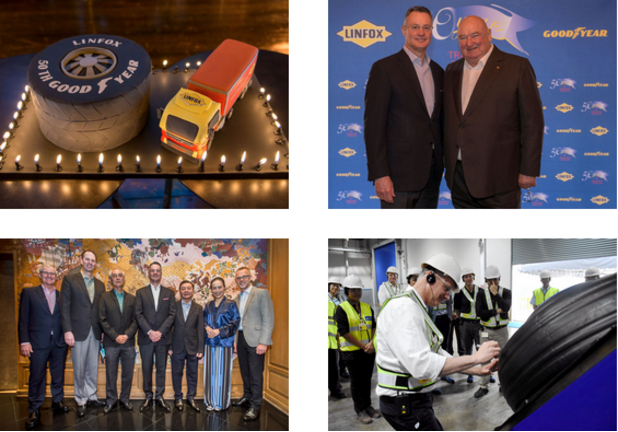
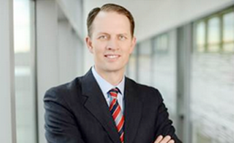
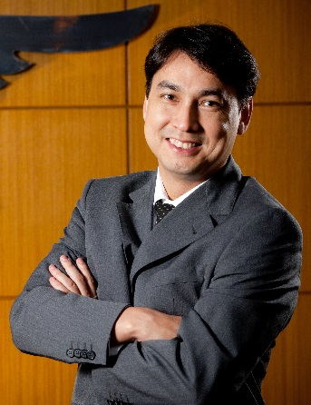
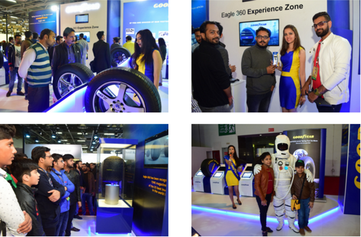
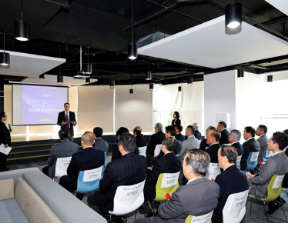
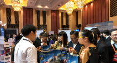
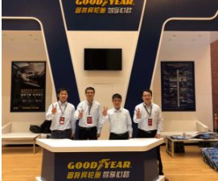
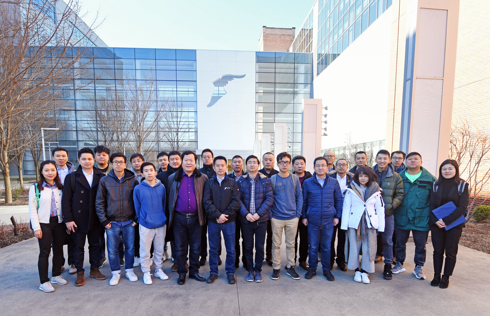
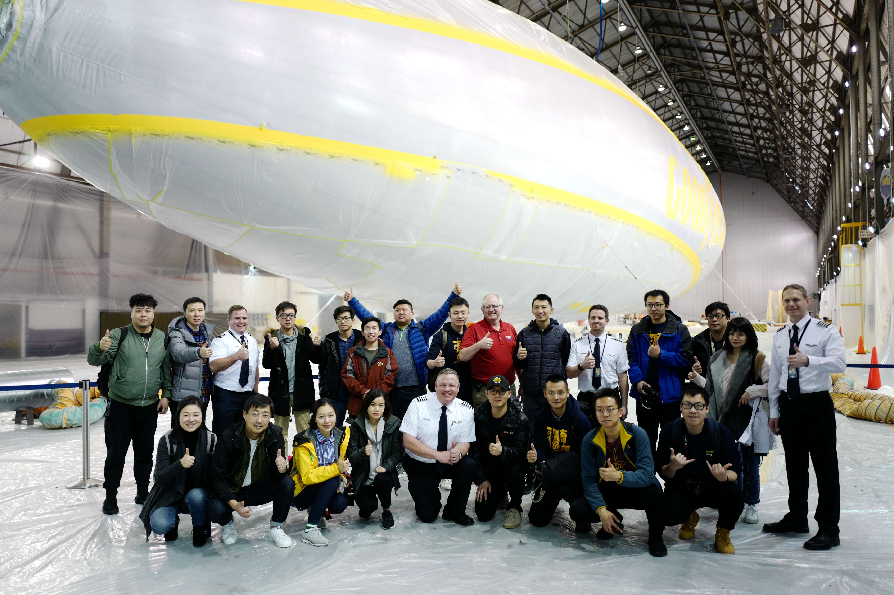

CEO Rich Kramer travels to AP region to recognize 50 years of collaboration
Any 50-year relationship is worth celebrating, but recognizing two golden anniversaries in the same week is extra special.
Those relationships in our Asia Pacific (AP) business were celebrated during the first week of March when CEO Rich Kramer traveled to the region to mark the occasions.
On March 1, Kramer was joined by AP President Ryan Patterson, EMEA President Chris Delaney, AP commercial PBU leader Michael Dreyer and other company representatives in Melbourne, Australia to honor, thank and reminisce with Linfox founder Lindsay Fox for a half-century of partnership. Linfox is Australia's leading logistics company and a commercial truck tire customer for a half-century.
Later that week, Kramer and Patterson recognized the 50th anniversary of Goodyear Thailand.
First, in his remarks at a celebratory gathering of Goodyear and Linfox associates and retirees, Kramer said the foundation of the companies' strong bond is their people. "Think about the greatest relationships in history, whether in business, technology, or the arts. They all started with people making connections with each other," said Kramer.
"As I think about Goodyear and Linfox, it starts with the connection we all feel with Lindsay Fox. How can you not be drawn to one of the world's most successful businessmen whose business card says, 'Lindsay Fox – Trucker'?"
Since 1968, Goodyear and Linfox have shared a unique relationship, whereby Linfox has provided the logistical fleet infrastructure to enable efficient delivery of Goodyear tires, while Goodyear provided the quality tires enabling the efficient running of Linfox's trucks.
Importantly, both companies have always shared values of quality, innovation, trust and most of all, mutual respect. Both Kramer and Fox spoke about the importance of attracting and nurturing good people in their organizations.
Coincidentally, the two companies held a similar event in 1993, celebrating 25 years together. At that event, a vision for the future was expressed. "Hopefully in the year 2018 we can meet again to celebrate another 25 years of a successful business relationship," it said.
"And here we are, 25 years later, celebrating 50 years together," Kramer added.
Marking Goodyear Thailand's milestone 50th anniversary, Kramer and Goodyear's AP and ASEAN leadership team reviewed the country's business growth plan and toured the Thailand plant to see the new radial aviation tire facility which will be in operation this April.
Kramer emphasized the challenges and opportunities in Thailand and encouraged the team to focus on the robust execution and continue to deliver strong results.
Kramer capped his regional tour with a visit to Malaysia on March 5, for business reviews with country and regional leadership teams.
Following a tour of the Malaysia plant, Kramer participated in a town hall meeting where he shared his thoughts on the company's strategy and direction as well as the industry changes that will bring growth to our business. He later met with key Goodyear distributors in Kuala Lumpur.
View photos from the trip in the Sway slideshow below.

APAC associates engagement pulse survey follow-up letter from Ryan Patterson - President, Asia Pacific
Dear Asia Pacific Associates,
In January, the Asia Pacific Engagement Survey was launched to collect associates’ feedback on our progress since the last full survey in 2014. We were excited to have 93% of you participate in this year’s survey! I would like to thank you for your overwhelming participation and for sharing your thoughts with us
The survey helps us understand what we are doing well as a company and helps us identify areas to focus our improvement efforts.

While the results of the survey will be discussed in more detail in your local organizations, I would like to share a few key highlights from the Asia Pacific perspective:
Across the board, we experienced a significant improvement in our survey results as you are reporting in that you feel more engaged and feel more enabled to perform your job at a high level. We need to continue making progress going forward!
While we saw improvements across the organization, we were especially excited to see a significant increase in our levels of engagement with those of you working in our manufacturing organization. When we initiated our plant optimization journey, we knew it had the potential to transform the way work and now we see its potential is even greater than our expectations. We are seeing the evidence your efforts in our factories and it also shows in your passion to find a better way to work every day. Our continued efforts to ensure our safety at work also contributed to the significant improvement.
In this year's survey, you also reported that your engagement level is higher than the engagement level of associates from the best performing global companies and higher than associates working for other Asia Pacific organizations. You highlighted the following positives in your feedback:
- You are proud to work at Goodyear
- You feel that your skills are well utilized in your role
- You understand how you can impact Goodyear's success
While the overall results were very positive, I would like to highlight two of our key improvement opportunities. We will focus on these areas going forward:
- We need to better support you by reducing the barriers to performing your job at a higher level
- We need to continue communicating Goodyear's direction to unleash your potential to go above and beyond in your current role.
More information about the survey results and action plan will be shared with you by your business and functional leaders in the following weeks and months. Thank you again for your feedback and active participation. Your participation will help make Goodyear an even greater place to work.
Ryan Patterson President, Asia Pacific
A safety message from Cesar Silva, VP manufacturing, Asia Pacific
Dear Asia Pacific Associates,
As a leading global manufacturing company, Goodyear is committed to excellence in environmental, health and safety performance. We recognize that our efforts to guarantee the safety and wellness of our associates benefits everyone, including our families, friends, and co-workers. As such, we want to demonstrate the highest EHS standards in Goodyear - it is the way we work every day and is essentialfor our long-term success.
Our safety track record continues to trend favorably and reflects our shared commitment to operate in a secure environment. We are proud to have completed another "safe month" in February - without a single OSHA recordable incident in the whole region! Congratulations to the team for the fantastic news!

In Goodyear, we will never be satisfied with our safety performance until every employee and contractor around the world goes home injury-free every day. With good judgement and sustainable governance initiatives in every facility, more than 7,000 manufacturing associates can go home safely every day to enjoy their life with families and friends. This is a strong evidence that "ZERO incidents" is possible when we take "Safety as a value".
As part of this goal, we would like to take a moment to highlight the importance of the SIP (Serious Injury Prevention) program, which helps us identify and prioritize the incidents and hazards with the highest risk for serious injuries. As you know, the SIP program has been implemented into our existing safety systems in 2017 to improve safety standards in every Goodyear facility around the world. We are thrilled to see the excellent progress towards the integration of the program throughout Asia Pacific, but as part of our continuous effort to promote safety, additional communication and training will be provided to ensure that everyone understands the methodology and the know-hows to use it to prevent injuries.
Safety is an essential value in every Goodyear facility and for all of our associates: we must all remember that safety comes first, and nothing is more important.
We thank each one of you throughout Asia Pacific for the significant progress that has been realized in our safety performances. It is a result of passion and commitment at all levels of the organization. And more importantly, we are very proud of your personal leadership to drive a working environment and culture around the value of safety.
However, despite all of the achievements so far, we are still not there yet. As a region, the only acceptable number for Asia Pacific is “ZERO incidents”. To reach this goal, we need to continue demonstrating “safety as a value” through our personal leadership, together with the engaged hearts and minds of our people.
Let's all work as One Team to achieve "ZERO incidents", please remember that we are our own safety leader.
Sincerely,
Cesar Silva, Vice President, Asia Pacific Manufacturing
Goodyear India celebrates 120 years of innovation at Auto Expo 2018
Goodyear India showcased its concept tyres at Auto Expo 2018, a biennial motor show, which co-incided with Goodyear's 120th Birthday. Goodyear India unveiled its innovative concept tyre "Eagle-360", a visionary tyre for future autonomous vehicles along with 'BH-03' & 'Triple Tube'. Celebrating its 120 years of innovation, Goodyear at the 14th Auto Expo showcased how it has been consistently innovating and introducing breakthrough technologies in the tire industry, and this was brought alive through a film highlighting Goodyear's key milestones.
The Expo gave us an opportunity to showcase Goodyear's technical capabilities in various areas including aviation, racing, heritage & future tyres along with the line up of the current range. Goodyear's stall received exciting response & drew large number of footfalls at the gaming section, which allowed participants to experience the maneuvering capabilities of Eagle-360 tyres while playing the 'Eagle-360 parking game'. The Selfie zone at the stall, where participants could take their 'Selfie with an Astronaut', was quite a crowd puller. Photos & videos of these activities also drove engagement on social media.

Goodyear got good PR mileage on Print & Online media, covering updates from Eagle-360 tyres for future autonomous vehicles ; while BH-03 garnered a lot of PR interest as the focus of most of the OEs was on electric & hybrid cars at the Expo. Media and visitors also showed a lot of interest in the history & heritage of Goodyear which was displayed in Goodyear's ' Wall of fame'.
Representatives from Goodyear India's Marketing, Sales, Customer Service & members of the technical team were present at the stall from 7th to 14th February 2018 to interact & address visitors' queries.
Speaking of Goodyear's showcase at the Auto Expo, P.K Walia, Vice President - Consumer Business, Goodyear India, said "As pioneers in tire technology, we consistently keep challenging ourselves to innovate and develop products that offer better driving experience to consumers. We are committed tobring in new products which are technologically advanced, future smart, and reliable. Be it the first tire to land on the moon or introduce the first tubeless tyres in India, Goodyear has always been at the forefront of technology and tested itself to the limits for designing and manufacturing ground-breaking and high performing products".
New Global IT Help Desk - Asia Pacific Go-Live
Dear Asia Pacific Associates,
Goodyear is centralizing its vendors, systems, processes and tools worldwide for IT Help Desk phone support, self-service ticketing and deskside support. This will result in associates receiving standardized, reliable support services within consistent, approved response times, while also delivering cost savings to the company.
The new global IT Help Desk supplier is TCS (Tata Consultancy Services). The official go-live date for Asia Pacific will be April 11th, 2018. The whole implementation will be completed by August 31st, 2018 in phases to better support all sites in Asia Pacific. Here are the details phases in different sites:
11 Apr, Singapore and Taiwan
18 Apr, Philippines and GBS Manila
25 Apr, OTR Australia
09 May, Jasola India
16 May, Ballabgarh India
23 May, Aurangabad India, Shanghai China and Thailand
06 Jun, Vietnam and Pulandian China
13 Jun, Korea and NGY Japan
20 Jun, New Zealand
18 Jul, GDT Australia
25 Jul, NGT Japan
01 Aug, Malaysia
15 Aug, Indonesia
IT Help Desk Phone Support - Current Phone Numbers Will Continue to Work
From within a Goodyear facility:
- New single global phone number added for use within most facilities: GTN 777-HELP / GTN 777-4357.
- Some AP locations will have a new phone number due to local technical restrictions
From outside of a Goodyear facility:
- New toll-free numbers added for most countries. The phone number list can be accessed on the GO IT Help Desk page.
- Some AP locations will have a new phone number due to local technical restrictions
Languages customized to Goodyear based on analysis of business requirements and usage:
- Five centralized global delivery locations around the world; defaults to the language where the call is originating.
- Asia Pacific languages: English, Japanese, Mandarin, Thai
- Language availability and hours list can be found in this FAQs document
IT Help Desk Self-Service Ticketing - New User-Friendly Global Platform
- Continue to have access to self-service ticketing as an option to submit questions to the IT Help Desk.
- New global platform, ServiceNow. The new self-service ticketing link is: https://goodyear.service-now.com/sp
- Provides an improved online user experience; replaces all current self-service ticketing systems.
- A new online chat assistance feature will be added soon.
IT Help Desk Deskside Support - Staffed Globally by New Supplier TCS
- Continue to have access to deskside support to assist with questions if the phone support is unable to resolve the issue.
- Deskside support can be accessed by:
- Calling the IT Help Desk phone support
- Creatinga IT Help Desk self-service ticket
- Staffed by the new global supplier TCS; replaces the current providers (excluding AP except for Taiwan and Parramatta. The rest of AP is unchanged).
GO Intranet IT Help Desk Page - All Global Contact Details in one Location
- The GO intranet IT Help Desk page will be kept up to date as a central location for all contact details.
Accessed by navigating to "Shortcuts" on the top banner of the GO homepage. Direct links to the GO IT Help Desk page are:
IT Help Desk contacts GO page for associates
IT Help Desk contacts GO page contractors, Retail stores and Manufacturing floor
For more information on the global IT Help Desk implementation, see this FAQs document.
All efforts have been made to continue high levels of IT Help Desk support services to associates, and to ensure a smooth transition with
minimal disruptions. As with any major process and system change, your support and patience are appreciated while we implement the new global IT Help Desk.
Kind regards,
Daniel Mossop
IT Director, Asia Pacific
Goodyear Japan organizes its annual Distributor Conference in Shanghai
Goodyear Japan (NGY) has recently hosted its annual Distributor Conference in Shanghai, marking the first overseas celebration of the event.
The Distributor Conference is a dynamic platform to communicate business plans, sales policies and engage prospective partners. A total of 24 distributors from all over Japan (ranging from Hokkaido, the Northern Island to Kyusyu, the Southern Island) participated in the event.

The two-day conference included official remarks by Ryan Patterson, President of Goodyear Asia Pacific, who offered insights on Goodyear's strategy and its long-term commitment to Japan; and a presentation by Lionel Ramirez, Vice-President of Goodyear Asia Pacific Consumer Division, on how Goodyear's connected business model can reliably support customers. More importantly, Goodyear emphasized the role of NGY and its team, as well as its importance within Goodyear's APAC business strategy and direction.
Finally, an award ceremony was conducted at Goodyear's Shanghai Office to congratulate distributors who achieved excellent sales results in 2017, as well as strong sales performance on strategic products such as all-season tires. NGY is proud to announce that one distributor has reach the milestone of exceeding annual 100,000 units sales for the first time in Japan.

During the event, NGY executives and branch managers have accompanied and supported the guests by addressing their queries, which helped to reinforce the long-standing partnerships and the mature understanding among partners.
The guests showed great appreciation for the invitation to the conference and highlighted the insightful presentations from regional leaders. At the end, every partner shared their confidence towards Goodyear's long-term strategy in Japan and their willingness to continue collaborating with Goodyear.
Goodyear Australia hosts Autocare National Conference
Two hundred and fifty franchisees, suppliers and Goodyear Australia associates congregated in Hobart, Australia in February, for the 2018 Goodyear Autocare National Conference.
The biennial conference, spanning three days offered: information sessions, exhibitions and other events. The conference was well received by attendees and was considered the "best conference yet" by many.
Goodyear associates presented many enhancements to the Goodyear Autocare franchise program, including a refreshed website, selling tools and programs, and details of two upcoming product launches: the Goodyear Assurance TripleMax 2 and Eagle F1 Asymmetric 3 SUV.
Of particular interest for franchisees was the launch of new branding for Goodyear Autocare, with a new tag line: "Good to Go". The refreshed branding highlights the confidence and peace-of-mind our franchisees impart on customers through their knowledge, experience and broad range of services. "Good to Go" has immediately come to life in a consumer promotion coinciding with the period leading up to Easter.
The conference culminated with an awards dinner, at which leading Goodyear Autocare franchisees were recognized for outstanding achievement.
Lou Mandanici, VP, Australia Consumer Wholesale said: "A successful conference requires collaboration from many contributors. While extensive planning went into this conference delivery from the Goodyear team, it was the energy, buy-in and collaboration from the delegates that really made the Hobart conference a wonderful success."
"We are particularly thrilled with the positive reaction to our new positioning strategy, so now Goodyear Autocare is truly "Good to Go" for 2018 and beyond," Mandanici concluded.
Goodyear China participates in Toyota Parts & Supplies Exhibition
The Goodyear China 4S* won the First Automobile Works (FAW) Toyota project bid in January 2018 and started supplying spare parts to FAW Toyota on March 12.
Being the only winning, non-original equipment bidder among six competitors,Goodyear China was nominated by 25 SKUs, which cover all FAW Toyota models.

The exhibition gave Goodyear China a unique opportunity to showcase its products and brands in front of customers and roughly 1,200 Toyota 4S dealer representatives.
Associates from the Goodyear China 4S team were present at the Goodyear booth to interact with visitors and answer questions. Goodyear's exhibition received positive response from attendees.

Toyota 4S dealers were deeply impressed by the showcase of Goodyear's 120 years of innovation and best-in-class products. Dealers showed a lot of interest in the videos played at the booth and especially liked the Eagle-360 concept tire as a solution for the future autonomous vehicles.
Through this exhibition, Goodyear China amplified its partnership with Toyota, expanded the influence of the Goodyear brand, increased mutual trust with Chinese customers and built a solid foundation for future business development in the market.
*4S or "Four in One" is an abbreviation for the four stars of an automotive dealer business model that pursues a full-service approach. The four stars include: Vehicle sales (Sale), parts (Spare parts), auto service (Service) and information feedback (Survey).
About FAW Group
FAW Group Corporation is a Chinese state-owned automotive manufacturing company headquartered in Changchun, Jilin. China. Its principal products are automobiles; buses; light, medium and heavy-duty trucks and auto parts. FAW is one of the "Big Four" Chinese automakers.
Key Chinese customers and media receive full Goodyear experience

In late February, key Chinese dealers and media travelled to Northeast Ohio to participate in three days of activities intended to educate and inspire.
The delegation was invited to Ohio to drive conversations about Goodyear in Chinese media outlets and provide customers a better understanding of the Goodyear brand and Goodyear's commitment to innovation.

The guests were treated to a tour of Goodyear's Innovation Center Manufacturing (ICM) facility where NASCAR and NHRA tires are made. Before the tour, Xu Su, GIC*A engineer presented an overview of Goodyear's innovation leadership and the company's global technology footprint.
Additionally, the 30 Chinese customers and media visited the Summit Mall Goodyear Auto Service store in Fairlawn, Ohio, to view a first-class retail experience.
Most impressive was a tour of the blimp base at Wingfoot Lake. The group received an up-close view of the build of Goodyear's newest airship, which to them represents Goodyear's iconic heritage in American history and pop culture.
The group also experienced Goodyear's industry-leading brand in a variety of formats. The highlight of that experience was attending a Cleveland Cavaliers game, which was highlighted by a Chinese New Year celebration, and seeing the iconic Wingfoot logo on the jerseys of Cavs players. The guests also visited St. Vincent St. Mary High School for a tour of where star and legend of the NBA, LeBron James got his start.
A visit to the Pro Football Hall of Fame in Canton, Ohio, another iconic sports organization that Goodyear holds a relationship with, gave another view of Goodyear's brand reach.
The group from China was impressed with the story that Goodyear had to tell and left the trip inspired by Goodyear, its history and its sustained commitment to innovation.